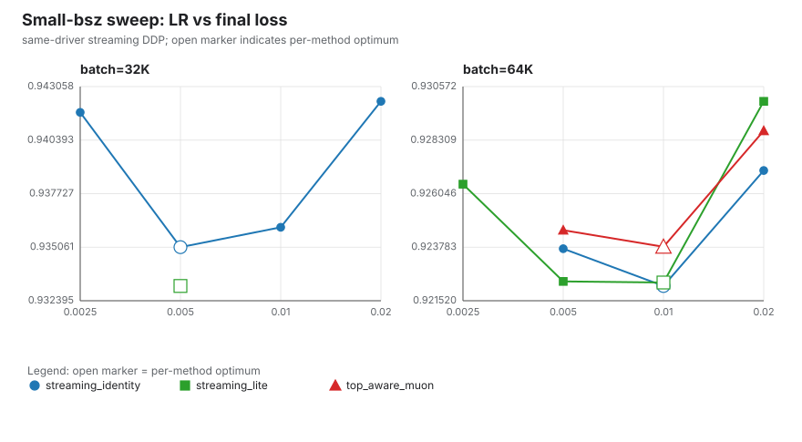
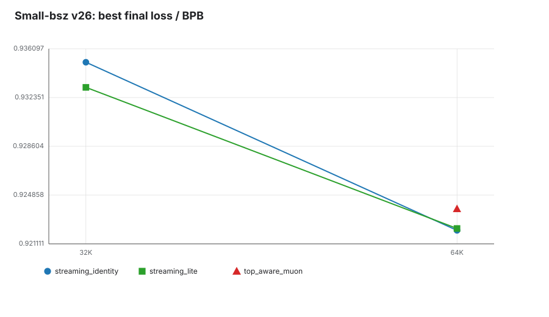
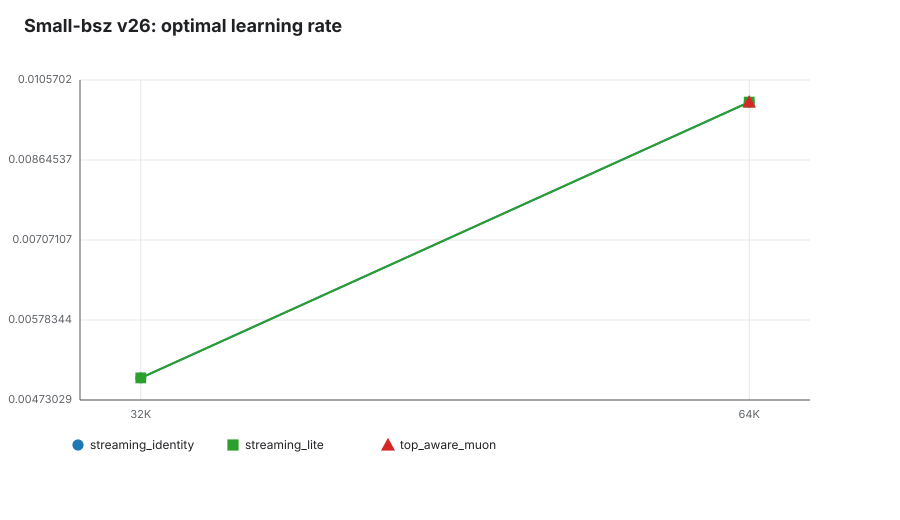
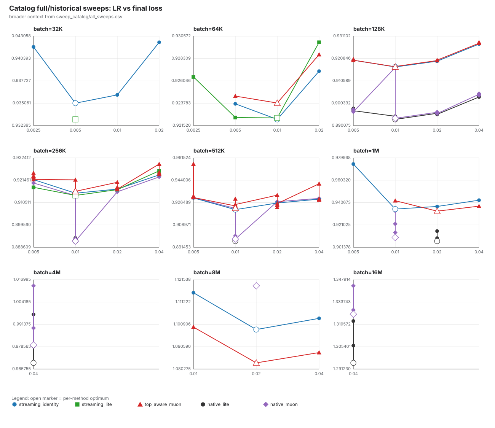
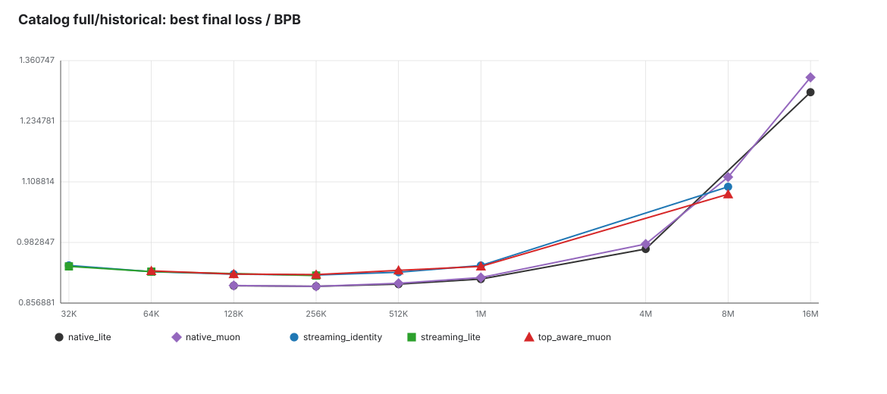
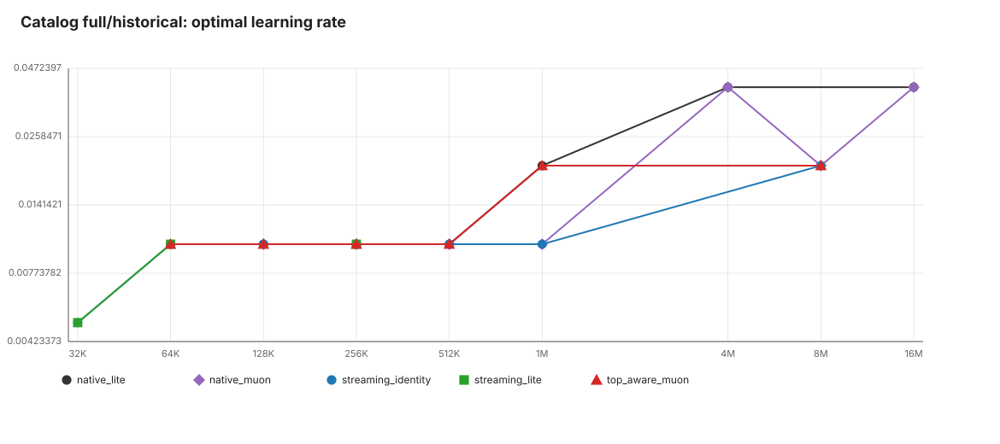

Generated under /mlx_devbox/users/xingyu.dang/playground/sigma-search-clean/figures/small_bsz_dashboard. Lower final loss/BPB is better.
result.json artifacts referenced by figures/current_same_driver_v26/raw_rows.csv are missing in this clean workdir (15/15 missing). Exact optimal-LR training loss curves need those raw artifacts restored under search_evals/v26_small_bsz_streaming_fair_20260430/**/result.json, then rerun python3 analysis/build_small_bsz_dashboard.py. The dashboard below fully covers LR-loss curves and optimal result tables from the available summaries.Each facet is one batch size; open markers indicate per-method optimal LR.



| batch_label | batch | winner_method | variant | optimal_lr | best_score | path |
|---|---|---|---|---|---|---|
| 32K | 32768 | streaming_lite | LITE-like chi=2 rs=.1 | 0.005 | 0.933130615316 | search_evals/v26_small_bsz_streaming_fair_20260430/lite_chi2_rs01_bsz32768_lr0p005_s42/result.json |
| 64K | 65536 | streaming_identity | identity / Muon-like | 0.01 | 0.922144542015 | search_evals/v26_small_bsz_streaming_fair_20260430/identity_bsz65536_lr0p01_s42/result.json |
CSV: optimal_summary_v26_small.csv
| batch_label | winner_in_batch | method | variant | optimal_lr | best_score | delta_vs_identity_best | seed | path |
|---|---|---|---|---|---|---|---|---|
| 32K | yes | streaming_lite | LITE-like chi=2 rs=.1 | 0.005 | 0.933130615316 | -0.00193302492656 | 42 | search_evals/v26_small_bsz_streaming_fair_20260430/lite_chi2_rs01_bsz32768_lr0p005_s42/result.json |
| 32K | streaming_identity | identity / Muon-like | 0.005 | 0.935063640242 | +0 | 42 | search_evals/v26_small_bsz_streaming_fair_20260430/identity_bsz32768_lr0p005_s42/result.json | |
| 64K | yes | streaming_identity | identity / Muon-like | 0.01 | 0.922144542015 | +0 | 42 | search_evals/v26_small_bsz_streaming_fair_20260430/identity_bsz65536_lr0p01_s42/result.json |
| 64K | streaming_lite | LITE-like chi=2 rs=.1 | 0.01 | 0.922291040381 | +0.000146498365874 | 42 | search_evals/v26_small_bsz_streaming_fair_20260430/lite_chi2_rs01_bsz65536_lr0p01_s42/result.json | |
| 64K | top_aware_muon | top1 per-matrix alpha=.5 | 0.01 | 0.923802321001 | +0.00165777898593 | 42 | search_evals/v26_small_bsz_streaming_fair_20260430/top1pm_a05_bsz65536_lr0p01_s42/result.json |
Broader comparison from results/sweep_catalog/all_sweeps.csv.



CSV: optimal_summary_catalog_full.csv
| batch_label | winner_in_batch | method | variant | source | optimal_lr | best_score | delta_vs_identity_best | quality |
|---|---|---|---|---|---|---|---|---|
| 32K | yes | streaming_lite | LITE-like chi2 tail | v26_streaming_small | 0.005 | 0.933130615316 | -0.001933024926 | full_or_historical |
| 32K | streaming_identity | alpha=1 identity | v26_streaming_small | 0.005 | 0.935063640242 | +0 | full_or_historical | |
| 64K | yes | streaming_identity | alpha=1 identity | v26_streaming_small | 0.01 | 0.922144542015 | +0 | full_or_historical |
| 64K | streaming_lite | LITE-like chi2 tail | v26_streaming_small | 0.01 | 0.922291040381 | +0.000146498366 | full_or_historical | |
| 64K | top_aware_muon | top_k=1, alpha=0.5 | v26_streaming_small | 0.01 | 0.923802321001 | +0.001657778986 | full_or_historical | |
| 128K | yes | native_lite | native LITE | native_single_gpu | 0.01 | 0.892904466248 | -0.024063293007 | full_or_historical |
| 128K | native_muon | native Muon | native_single_gpu | 0.01 | 0.893412769118 | -0.023554990137 | full_or_historical | |
| 128K | native_muon | native Muon | native_ddp_exact_control | 0.01 | 0.916691571436 | -0.000276187819 | full_or_historical | |
| 128K | streaming_identity | alpha=1 identity | ddp_top1_official | 0.01 | 0.916967759255 | +0 | full_or_historical | |
| 128K | top_aware_muon | top_k=1, alpha=0.5 | ddp_top1_official | 0.01 | 0.917040211464 | +7.24522090001e-05 | full_or_historical | |
| 128K | top_aware_muon | top_k=1, alpha=0.75 | v28_topaware_k1_128k_alpha075_20260430 | 0.01 | 0.917182580054 | +0.000214820799 | full_or_historical | |
| 256K | yes | native_muon | native Muon | native_single_gpu | 0.01 | 0.891630208762 | -0.023488642581 | full_or_historical |
| 256K | native_lite | native LITE | native_single_gpu | 0.01 | 0.891713422337 | -0.023405429006 | full_or_historical | |
| 256K | yes | native_muon | native Muon | v29_topaware_k1_256k_alpha_sweep_20260430 | 0.01 | 0.913945547248 | -0.001173304095 | full_or_historical |
| 256K | streaming_lite | LITE-like chi2 tail | v29_topaware_k1_256k_alpha_sweep_20260430 | 0.01 | 0.914020113599 | -0.001098737744 | full_or_historical | |
| 256K | streaming_identity | alpha=1 identity | v29_topaware_k1_256k_alpha_sweep_20260430 | 0.01 | 0.915118851343 | +0 | full_or_historical | |
| 256K | top_aware_muon | top_k=1, alpha=0.875 | v29_topaware_k1_256k_alpha_sweep_20260430 | 0.01 | 0.91602283755 | +0.000903986207 | full_or_historical | |
| 256K | top_aware_muon | top_k=1, alpha=0.75 | v29_topaware_k1_256k_alpha_sweep_20260430 | 0.01 | 0.916292214862 | +0.001173363519 | full_or_historical | |
| 256K | top_aware_muon | top_k=1, alpha=0.5 | v29_topaware_k1_256k_alpha_sweep_20260430 | 0.01 | 0.916747576993 | +0.00162872565 | full_or_historical | |
| 256K | top_aware_muon | top_k=1, alpha=0.25 | v29_topaware_k1_256k_alpha_sweep_20260430 | 0.02 | 0.920442349825 | +0.005323498482 | full_or_historical | |
| 512K | yes | native_lite | native LITE | native_single_gpu | 0.01 | 0.896285405654 | -0.02467881743 | full_or_historical |
| 512K | native_muon | native Muon | native_single_gpu | 0.01 | 0.89789886852 | -0.023065354564 | full_or_historical | |
| 512K | streaming_identity | alpha=1 identity | v31_topaware_k1_512k_alpha_sweep_20260501 | 0.01 | 0.920964223084 | +0 | full_or_historical | |
| 512K | native_muon | native Muon | v31_topaware_k1_512k_alpha_sweep_20260501 | 0.01 | 0.921939719621 | +0.000975496537 | full_or_historical | |
| 512K | top_aware_muon | top_k=1, alpha=0.5 | v31_topaware_k1_512k_alpha_sweep_20260501 | 0.01 | 0.922203010947 | +0.001238787863 | full_or_historical | |
| 512K | top_aware_muon | top_k=1, alpha=0.25 | v31_topaware_k1_512k_alpha_sweep_20260501 | 0.01 | 0.923897378299 | +0.002933155215 | full_or_historical | |
| 512K | top_aware_muon | top_k=1, alpha=0.75 | v31_topaware_k1_512k_alpha_sweep_20260501 | 0.02 | 0.924523437834 | +0.00355921475 | full_or_historical | |
| 512K | top_aware_muon | top_k=1, alpha=0.875 | v31_topaware_k1_512k_alpha_sweep_20260501 | 0.01 | 0.924970178152 | +0.004005955068 | full_or_historical | |
| 1M | yes | native_lite | native LITE | native_single_gpu | 0.02 | 0.906797957738 | -0.028180985872 | full_or_historical |
| 1M | native_muon | native Muon | native_single_gpu | 0.01 | 0.910022068786 | -0.024956874824 | full_or_historical | |
| 1M | top_aware_muon | top_k=1, alpha=0.5 | streaming_ddp_top1_old | 0.02 | 0.933161045243 | -0.001817898367 | full_or_historical | |
| 1M | native_muon | native Muon | native_ddp_exact_control | 0.01 | 0.933374706807 | -0.001604236803 | full_or_historical | |
| 1M | streaming_identity | alpha=1 identity | streaming_ddp_top1_old | 0.01 | 0.93497894361 | +0 | full_or_historical | |
| 4M | yes | native_lite | native LITE | native_single_gpu | 0.04 | 0.969288754419 | full_or_historical | |
| 4M | native_muon | native Muon | native_single_gpu | 0.04 | 0.979475380653 | full_or_historical | ||
| 8M | yes | top_aware_muon | top_k=1, alpha=0.5 | streaming_ddp_top1_old | 0.02 | 1.08312030822 | -0.01538080692 | full_or_historical |
| 8M | streaming_identity | alpha=1 identity | streaming_ddp_top1_old | 0.02 | 1.09850111514 | +0 | full_or_historical | |
| 8M | native_muon | native Muon | native_ddp_exact_control | 0.02 | 1.11869260381 | +0.02019148867 | full_or_historical | |
| 16M | yes | native_lite | native LITE | native_single_gpu | 0.04 | 1.29513925735 | full_or_historical | |
| 16M | native_muon | native Muon | native_single_gpu | 0.04 | 1.3259978533 | full_or_historical |